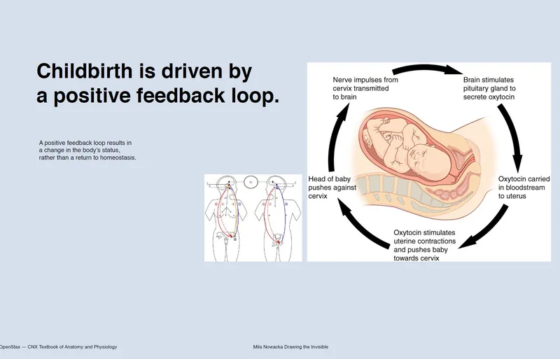

Drawing the Invisible for The College of Psychic Studies, London, 2026
This workshop takes Annie Besant and Charles W. Leadbeater's Thought-Forms (1901) as a starting point for exploring the possibility of visualising thought and other invisible phenomena through feedback loops. Together we examined the theoretical principles proposed in the book, asking what conditions determine the forms that our thoughts and emotions take. The workshop translates these ideas into direct, embodied practice, using movement, sensory observation and drawing exercises focused on the body and the visual apparatus, the participants experiment with translating mental and bodily states into visual processes.
